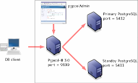

In this tutorial, I explain how to create a super-simple-toy streaming replication setting using pgpool-II step by step. What you need is just a Linux box. Onto the box I install two PostgreSQL instances, pgpool-II and pgpoolAdmin.
Though the setting is super simple, it makes possible to implement important functionalities which PostgreSQL 9.0 lacks:
Once you understand the setting described in this tutorial, you could easily extend to a real-world setting: i.e. two dedicated DB servers setting.
Here is the overall picture of the installation. 
Please note that in this figure port 5432 PostgreSQL is assigned to the primary server and port 5433 PostgreSQL is assigned to the standby server. This is just a initial setting and afterward you can interchange the role of each PostgreSQL by using online recovery.
The easiest way is downloading Linux package from PostgreSQL official site. However usually Linux packages allow to start only 1 PostgreSQL instance. So you need to disable automatic starting at the system booting time and start PostgreSQL by hand using pg_ctl.
Another way to install PostgreSQL is from the source code. This is surprisingly easy actually. Just unpack the tar ball and configure;make;make install. See the PostgreSQL manual for more details.
From now on, I assume that database clusters are located at /home/postgres/data and /home/postgres/standby and are owned by postgres user:
$ initdb -D /home/postgres/data $ initdb -D /home/postgres/standby
Next add followings to /home/postgres/data/postgresql.conf and /home/postgres/standby/postgresql.conf. "logging_collector" and below are not really relevant to Streaming replication but they are my favorites to make my life easier. You might want to remove "log_statement = 'all'" in production environment however.
hot_standby = on wal_level = hot_standby max_wal_senders = 1 logging_collector = on log_filename = '%A.log' log_line_prefix = '%p %t ' log_truncate_on_rotation = on log_statement = 'all'
Add following to /home/postgres/standby/postgresql.conf because we want to run standby PostgreSQL at 5433 port.
port = 5433
Put pg_hba.conf to /home/postgres/data. Of course you need to replace "/some/where/" with actual directory where you downloaded the scripts.
$ cp /some/where/pg_hba.conf" /home/postgres/data"
Start PostgreSQL primary server.
$ pg_ctl -D /home/postgres/data start
In this configuration you need to install to-be-released-as-3.1 version of pgpool-II. Here is the tar ball.
Do followings as whatever user you like. Typically "postgres" user is preferred. "install-functions.sh" can be downloaded here. Of course you need to replace "/some/where/" with actual directory where you downloaded the scripts.
$ tar xfz /some/where/pgpool-II-3.1.0-alpha1.tar.gz $ cd pgpool-II-3.1-alpha $ ./configure $ make $ sudo make install $ cp /some/where/install-functions.sh . $ sh install-functions.sh
Next you need to install pgpool-II configuration files. The main configuration file is pgpool.conf. The other one is the pcp.conf. You will need to execute followings as root.
# cp /some/where/pgpool.conf /usr/local/etc # chown apache /usr/local/etc/pgpool.conf # cp /some/where/pcp.conf /usr/local/etc # chown apache /usr/local/etc/pcp.conf
The reason why we execute chown is, pgpoolAdmin need to modify those files. pgpoolAdmin is a PHP script thus executed by Apache. If you have no plan to use pgpoolAdmin(that measn you want to use pcp command line admin tools only), you do not need to execute chown.
The initial password for "postgres" in the pcp.conf is "pgpoolAdmin". I strongly recommend to change the password immediately after finishing the installation. The new password string can be obtained using pg_md5 command. See the pgpool-II doc for more details.
Install basebackup.sh and pgpool_remote_start, neccessary for online recovery. Note that in pgpool_remote_start the path to pg_ctl command is specified. You might want to change it to an appropreate path according to your PostgreSQL installation.
$ cp /some/where/baseback.sh /home/postgres/data $ chmod 755 basebackup.sh $ cp /some/where/pgpool_remote_start /home/postgres/data $ chmod 755 pgpool_remote_start
Install failover.sh for automatic failover.
$ sudo cp /some/where/failover.sh /usr/local/etc $ chmod 755 failover.sh
Create neccessary directories. Execute followings as root. The reason why we use chown is, pgpool-II is started by pgpoolAdmin. If you do not have a plan to use pgpoolAdmin, you need to change "apache" to the user you want to invoke pgpool-II.
# mkdir /var/run/pgpool # chown apache /var/run/pgpool # mkdir /var/log/pgpool # chown apache /var/log/pgpool # mkdir /var/log/pgpool/trigger # chmod 777 /var/log/pgpool/trigger
Create apache user.
$ createuser apache Shall the new role be a superuser? (y/n) n Shall the new role be allowed to create databases? (y/n) n Shall the new role be allowed to create more new roles? (y/n) n
pgpoolAdmin is a management tool for pgpool-II written in PHP. pgpoolAdmin must be executed on the same host which pgpool-II is running on. This effectively means that pgpoolAdmin does not work on Windows platform. pgpoolAdmin runs on PHP 4.2 or higher. It also needs PostgreSQL extention. If you plan to build PHP, please include --with-pgsql option. If you plan to install PHP from rpm. you may need to install PostgreSQL extension as well. Some distributions have built-in support for PostgreSQL extention, but most distributions do not.
pgpoolAdmin has its own installer thus it is pretty easy to install pgpoolAdmin. In this configuration you need to install to-be-released-as-3.0.2 version of pgpoolAdmin. Unpack it under Apache document directory(for example, /var/www/html/). Follow the install instruction, located at doc/install/install.html. Here are several key points before installing pgpoolAdmin by using Web installer.
# cd /var/www/html/pgpoolAdmin-3.0.2 # chmod 777 templates_c # chown apache conf/pgmgt.conf.php # chmod 644 conf/pgmgt.conf.php
Once you are prepared, brows the pgpoolAdmin install using your favorite Web browser. In this example, the URL will be http://localhost/pgpoolAdmin-3.0.2/install/index.php. You will see this page. Click "Next" and you will see this this page. Please make sure that all items are checked by green. This indicates that everytyhing is good. Click "Next". This is the main setting page. Several points you want to change from default values:
Once you've done, the page should look like this. You finished to install pgpoolAdmin. Conguratulations!
Login to pgpoolAdmin and start pgpool-II from "pgpool status" menu. You see port 5432 PostgreSQL is running as a primary server. You should be able to connect to port 9999 by using psql. Let's try to create a table.
$ createdb -p 9999 test $ psql -p 9999 test test=# create table t1(i int); CREATE TABLE test=#
You will find something like this in the pgpool log.
$ tail /var/log/pgpool/pgpool.log.Wednesday 2010-11-03 23:12:55 LOG: pid 4148: DB node id: 0 backend pid: 4607 statement: create table t1(i int);
You will see same thing in the PostgreSQL log as well.
$ tail /home/postgres/data/pg_log/Wednesday.log 4607 2010-11-03 23:12:55 JST LOG: statement: create table t1(i int);
At this point standby server is not running. To start standby server, just click "Recovery" button. "basebackup.sh" will be executed and the standby server will be automatically started.
Once standby server is running, streaming replication starts. Let's insert some data into t1.
-- insert into t1 via pgpool-II. -- it will be executed on primary server psql -p 9999 test test=# insert into t1 values(1); test=# \q psql -p 5433 test -- now connected to standby server test=# select * from t1; i --- 1 (1 row)
If standby goes down, it is disconnected from pgpool-II. Users can issue SQL via pgpool-II as usual. Just streaming replication is stopped. To recover standby server, click "Recovery" button.
Don't panic. Standby server is there for this situation.
$ pg_ctl -D /home/postgres/data -m f stop
As you can see, port 5432 PostgreSQL goes down and 5433 PostgreSQL takes over the primary role. When pgpool-II finds that primary is going down it executes failover script(failover.sh). The script creates trigger file as /var/log/pgpool/trigger/trigger1. Standby server finds the file and decides to promote to primary. If you click the "Recovery" button of 5432 PostgreSQL, the former primary server will be recovered as standby server.
PostgreSQL 9.0 supports simple and easy to use built-in replication system. Adding pgpool-II on top of the replication system it is possible to build a high availability(HA) system.
If you have questions and/or comments, please post to pgpool-general mailing list.
Tatsuo Ishii
ishii at sraoss.co.jp
{kind=link}
{kind=link}
{kind=link}
{kind=link}
{kind=link}
{kind=link}
{kind=link}
{kind=link}
{kind=link}